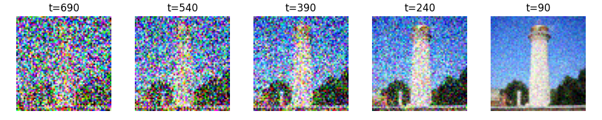

CS180 Project 5: Diffusion Models Exploration
Author: Ziqian Luo
Table of Contents
- Part 0: Setup
- Part 1: Sampling Loops
- Part 1.1: Implementing the Forward Process
- Part 1.2: Classical Denoising
- Part 1.3: One-Step Denoising
- Part 1.4: Iterative Denoising
- Part 1.5: Diffusion Model Sampling
- Part 1.6: Classifier-Free Guidance (CFG)
- Part 1.7: Image-to-Image Translation
- Part 1.8: Visual Anagrams
- Part 1.9: Hybrid Images
- Part 2: Training a Single-Step Denoising UNet
- Part 2.1: Implementing the UNet
- Part 2.2: Using the UNet to Train a Denoiser
- Part 2.2.1: Training
- Part 2.2.2: Out-of-Distribution Testing
- Part 3: Training a Diffusion Model
- Part 3.1: Adding Time Conditioning to UNet
- Part 3.2: Training the Time-Conditioned UNet
- Part 3.3: Sampling from the Time-Conditioned UNet
- Part 3.4: Adding Class-Conditioning to UNet
- Part 3.5: Sampling from the Class-Conditioned UNet
- Conclusion
Part 0: Setup
I used two different values for num_inference_steps: 40 and 100.
I noticed that increasing the number of inference steps improved the quality of the generated images, making them more detailed and visually appealing.
I used a fixed random seed 42.
Part 1: Sampling Loops
Part 1.1: Implementing the Forward Process
To implement the forward process, I added noise to a clean image by iteratively applying a noise function at different timesteps. The results below showcase how the image progressively becomes noisier as the timestep increases.
Part 1.2: Classical Denoising
For classical denoising, I applied a Gaussian blur filter to the noisy images generated in the forward process. The results show the original noisy images.
Part 1.3: One-Step Denoising
Using a pre-trained diffusion model (UNet), I denoised the images that had been corrupted at timesteps t=250, 500, and 750. This one-step denoising method used the model to estimate and remove the noise in a single iteration. The results below compare the original noisy images with the model's estimated clean versions.

Part 1.4: Iterative Denoising
To improve upon the one-step denoising, I implemented an iterative denoising loop. This approach involved creating strided timesteps and repeatedly applying the diffusion model to progressively remove noise. I added noise to a test image and then iteratively denoised it, showing the image at each significant step. The final image is compared to the one-step denoised version and the Gaussian-blurred image.
Part 1.5: Diffusion Model Sampling
In this part, I used the iterative denoising process to generate images from scratch by starting with random noise. By applying the diffusion model iteratively, I was able to create realistic images from pure noise. Below are 5 sample images that were generated using this method.
Part 1.6: Classifier-Free Guidance (CFG)
Classifier-Free Guidance (CFG) was used to enhance the quality of the generated images. By combining conditional and unconditional noise estimates, CFG allowed me to steer the image generation towards more visually appealing results. Below are 5 images generated using CFG.
Part 1.7: Image-to-Image Translation
For image-to-image translation, I used the diffusion models to make edits to existing images. I experimented with both hand-drawn and web images, projecting them onto a natural image manifold. Below are examples of the edited images.
Part 1.7.1: Editing Hand-Drawn and Web Images
Hand-drawn and web images were edited using the diffusion model to enhance their quality and realism. By projecting these images onto a natural image manifold, I was able to transform them into more photorealistic versions. Below are examples of the edited images.
Part 1.7.2: Inpainting
Inpainting was implemented to edit specific parts of an image. Using a binary mask, I was able to generate new content for selected regions while preserving the unchanged areas. This technique is particularly useful for making localized edits without affecting the rest of the image. Below are examples of inpainting results.
Part 1.7.3: Text-Conditional Image-to-Image Translation
In this part, I modified image generation using text prompts to guide the edits. By providing a new text prompt, I was able to influence the model to generate new features or alter existing ones in an image, starting from various noise levels. Below are examples of images generated using text-conditional image-to-image translation.

Part 1.8: Visual Anagrams
Visual anagrams were created to generate images that change their interpretation when flipped upside down. By implementing this technique, I produced an image that displayed different scenes depending on its orientation. Below are examples of visual anagrams that exhibit this property. You can absolutelt tell which prompts I used for each image.
Part 1.9: Hybrid Images
Hybrid images were created by combining features from two different prompts. By blending high-frequency and low-frequency information from two separate images, I was able to produce a composite image that appears different depending on the viewing distance. Below are examples of hybrid images, including one that appears as a skull from far away but transforms into a waterfall when viewed up close.
Part 2: Training a Single-Step Denoising UNet
I started by building a simple one-step denoiser. Given a noisy image, I wanted to train a denoiser that could map it to a clean image. To do this, I optimized over an L2 loss.
Part 2.1: Implementing the UNet
I implemented the denoiser as a UNet. It has a few downsampling and upsampling blocks, with skip connections in between.

The diagram above shows the standard tensor operations I used:

Part 2.2: Using the UNet to Train a Denoiser
To solve the denoising problem, I wanted the UNet to take in a noisy image and output a clean version of it. The training goal was to minimize the L2 loss between the predicted and clean images.
I generated training data pairs of (clean image, noisy image). Each clean image was a clean MNIST digit, and for each batch, I added noise to create the noisy version:
Part 2.2.1: Training
Then, I trained the model to perform denoising.
Below is the training loss curve for the UNet:
I visualized the denoised results on the test set at the end of training. Below are sample results after the 1st and 5th epochs:
Part 2.2.2: Out-of-Distribution Testing
Next, I tested the model on noise levels that it wasn't trained for to see how well it could generalize:
Part 3: Training a Diffusion Model
Now, I was ready to train a diffusion model using a UNet that can iteratively denoise an image. This part involved implementing a DDPM (Denoising Diffusion Probabilistic Model).
To do this, I conditioned the UNet on a timestep. This allowed the model to learn how to remove noise effectively at different stages. Conditioning the UNet meant adding information about the current timestep to guide the denoising process more accurately.
Part 3.1: Adding Time Conditioning to UNet
To add time conditioning, I needed to inject the timestep information into the UNet. I did this using a fully-connected block (FCBlock), which let me add the scalar timestep as an extra input to the model.

I used an operator called FCBlock to inject the timestep. The diagram above shows how I used the FCBlock to condition the UNet on the timestep.

Since the timestep is just a single number, I normalized it to be between 0 and 1 before feeding it into the FCBlock.
Part 3.2: Training the Time-Conditioned UNet
To train the time-conditioned UNet, I picked random images from the training set along with random timesteps, and trained the model to predict the noise that had been added. This process was repeated for different images and different timesteps until the model learned to effectively denoise at all stages.
Below is the training loss curve for the time-conditioned UNet:

Part 3.3: Sampling from the Time-Conditioned UNet
Once the time-conditioned UNet was trained, I used it to generate images from pure noise. The sampling process was similar to the iterative denoising approach I used earlier, but now the model was better at understanding the noise level at each step, thanks to the timestep conditioning.
Part 3.4: Adding Class-Conditioning to UNet
To make the generated images even better, I also added class conditioning to the UNet. This allowed the model to generate specific digit classes, giving me more control over the output. I added two more FCBlocks to the UNet to inject class information alongside the timestep.
Instead of a scalar, I used a one-hot vector to represent the class. This way, the model could understand which class it was working with, while still being flexible enough to generate images without any class conditioning (by dropping the conditioning information).
Below is the training curve for the class-conditioned UNet:

Part 3.5: Sampling from the Class-Conditioned UNet
After training the class-conditioned UNet, I sampled images from the model to see how well it could generate digits of different classes. The sampling process was the same as for the time-conditioned model, but with the added benefit of class control. I also used classifier-free guidance to improve the quality of the generated images by adjusting the conditioning signal during sampling.
Below are the results of sampling from the class-conditioned UNet at different stages of training, such as after 5 and 20 epochs:

Conclusion
Overall, this project was a great learning experience. I was able to explore various diffusion models and understand how they can be used to generate images from noise. By training a UNet to denoise images, I learned how to improve the quality of generated images and control the output using class and time conditioning. I also experimented with different techniques such as classifier-free guidance and image-to-image translation to enhance the generated images further. This project has given me a deeper understanding of diffusion models and their applications in image generation and manipulation.